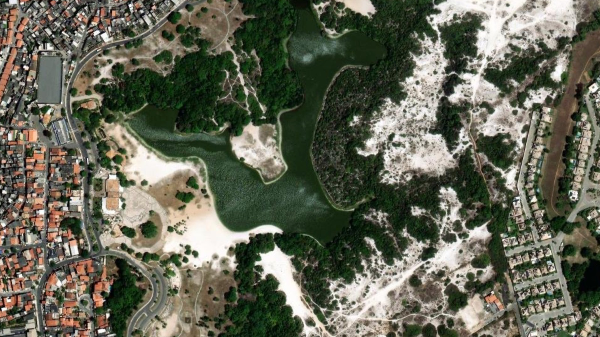
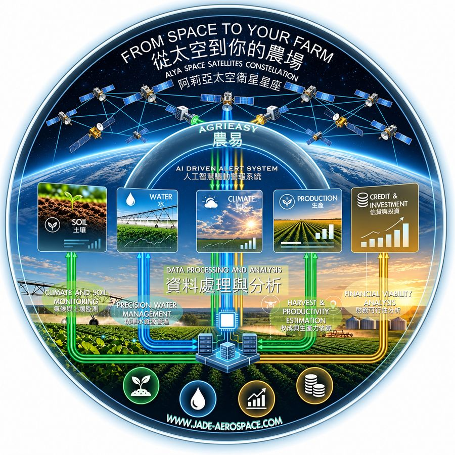
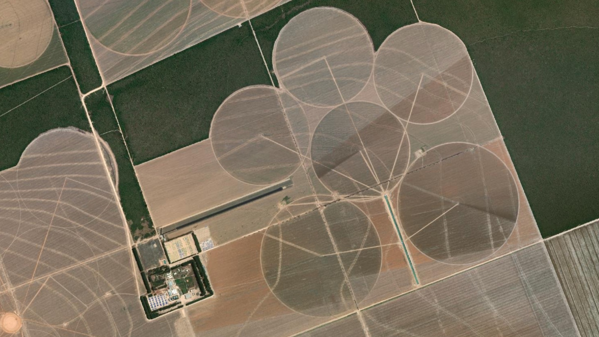
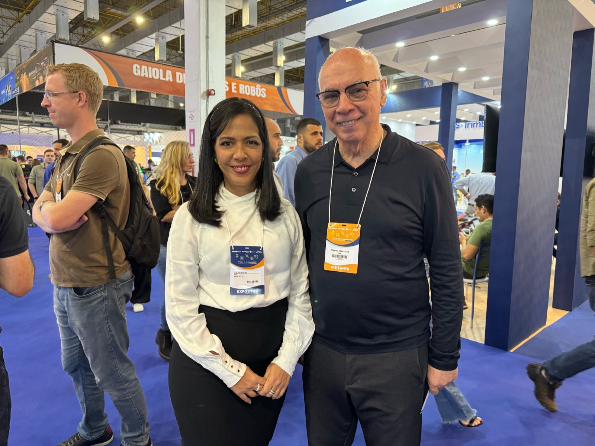
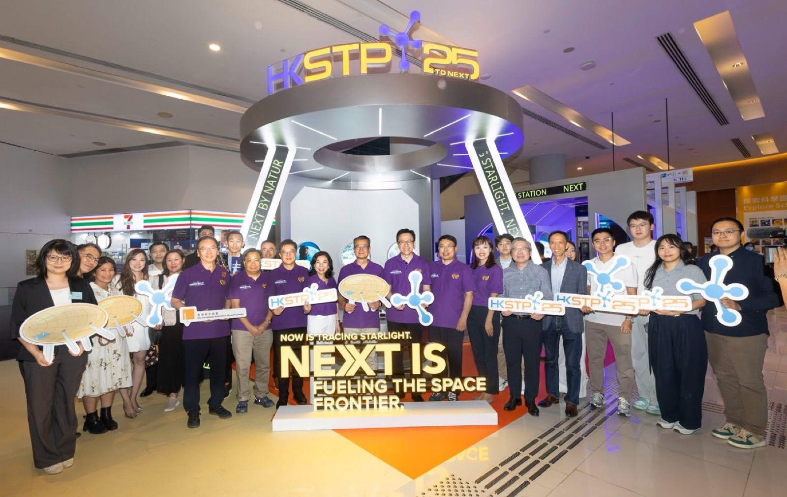

多数卫星公司只做其中一环。我们把整条链放在一起：从轨道上的卫星，到农户手机上的提示。

216 颗卫星，24 个轨道面：0.5 米光学卫星，加上能穿透云层的 SAR 雷达卫星。

巴西 6 个已获许可的站址，X 与 S 频段，负责卫星测控和数据下传。

位于巴西东北部半干旱区，晴空多、云量少，为光学和雷达传感器定标。

AgriEasy 农易和分析平台在香港研发，把影像变成能直接用的结论。
卫星星座
每个轨道面 7 颗光学卫星、2 颗 SAR 雷达卫星。光学看清地块细节和作物长势；雷达昼夜成像、穿透云层，雨季也不再是盲区。
地面站与定标场
巴西 6 个已获许可的地面站站址。首站位于巴伊亚州图卡诺，已完成总体规划和建筑方案；巴伊亚州政府支持在州科技园设立控制中心。


AgriEasy 农易 · 香港研发
AgriEasy 把卫星影像和气象数据交给 AI 分析，再用微信（中国）、WhatsApp（巴西）或短信给中小农户推送作物提示。农户免费使用，银行、保险公司和出口商按面积付费。

出苗率、种植边界、长势（NDVI 等）、土壤湿度、产量与成熟期。
树木计数、森林覆盖与健康、欧盟毁林法规（EUDR）核查、碳汇监测。
矿区持续监测、地面沉降、地质灾害前后对比。
山火识别与火源分析、灾后损失核查（保险）。
船只目标检测、海岸线变化、养殖浮筏提取、赤潮绿潮识别。
施工进度、原油储量估算、机场动态、城市三维重建。
已完成的项目
每个项目都走完了完整流程：采集数据、分析、编写报告、交付。现在我们正把这套流程开发成自动化平台。客户名称受保密协议约束，不予公开。
对比 4 年前与当前影像，证明没有毁林。报告符合欧盟毁林法规（EUDR），也可提交给贷款方。
对低收入农业社区补种的原生树进行卫星计数与监测，报告成为碳信用买家认可的核查文件。

为巴西一个大型矿区按月持续监测，协调多家卫星运营商的数据，按时交付。
卫星视角


在巴西、欧洲和香港七年的前期积累，以及接下来的计划。
已完成
获巴西空军 Amazonia 4.0 挑战赛冠军。
在 IEAv / DCTA 驻所验证。
International Astronautical Congress (IAC)。
Chai Jianguo、Li Ruoyu 加入；Alya Nanosatellites 在巴黎成立；经 ANATEL 向 ITU 申报；2024 G20 航天会议演讲。
入选 Microsoft × HKSTP 共创计划。
巴西和非洲的矿业、咖啡、碳汇与土地项目；参展 InnoCarnival 2026 香港太空展区。
计划中
与合作伙伴一起推进首批卫星和图卡诺地面站建设。
卫星数据、AI 分析，加上微信、WhatsApp 或短信提示，首批试用用户。
保险公司或银行，按面积付费。
星座首批卫星的发射目标。
航天、地面站与 AI。Aila、Chai Jianguo 和 Li Ruoyu 自 2023 年起一起交付了全部试点项目；Rhea 负责把这套流程做成 AI 平台。

创始人兼 CEO
Alya Space、Alya Nanosatellites 与玉航天创始人，负责星座设计；巴西空军 Amazonia 4.0 挑战赛冠军。

CTO · 卫星与地面系统
主持尼日利亚、委内瑞拉、巴基斯坦、阿尔及利亚等 20 多个卫星项目的地面站建设。
CTO · GeoAI
地球物理与机器学习背景；斯伦贝谢（SLB）机器学习研究，奥雅纳（Arup）、辉固（Fugro）香港。负责 AI 平台研发。
COO · 遥感与数据融合
遥感工程师，新加坡国立大学应用地理信息系统硕士；多源卫星与无人机数据处理。
活动现场



